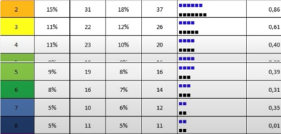
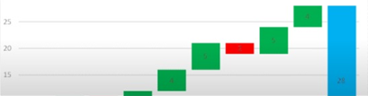

Installer XLstore
La macro XLStore.xlam est un complément Excel qui permet d'ajouter des fonctionnalités à votre tableur notamment : Test de Benford. Recherche d'anomalies : Fichier des
LIRE LA SUITE »La macro XLStore.xlam est un complément Excel qui permet d'ajouter des fonctionnalités à votre tableur notamment : Test de Benford. Recherche d'anomalies : Fichier des
LIRE LA SUITE »
Le test de Benford est basé sur la constatation que la fréquence d'apparition du premier chiffre significatif d'un nombre n'est pas équivalente. Intuitivement, on pourrait
LIRE LA SUITE »Les virements SEPA est l'acronyme de l'expression anglaise Single Euro Payment Area, c'est-à-dire espace unique de paiement en euros.
LIRE LA SUITE »
Le graphique en cascade permet de visualiser rapidement les valeurs positives et négatives ayant un impact sur une valeur de référence.
LIRE LA SUITE »